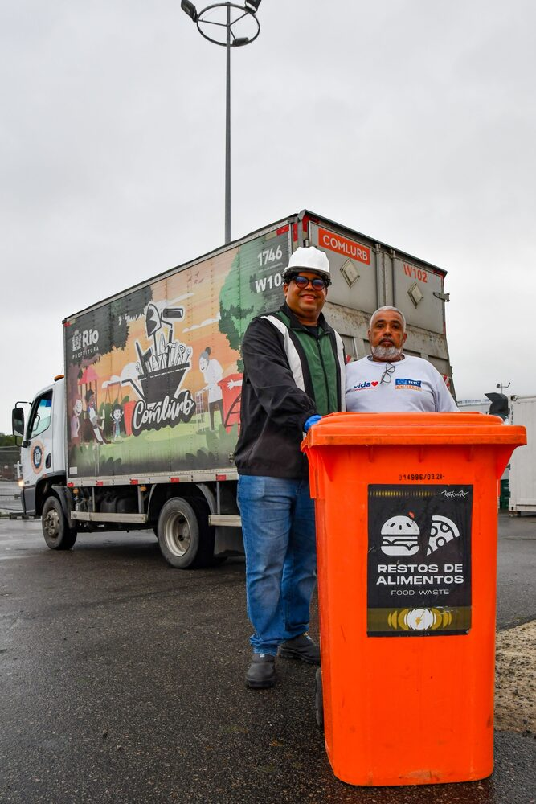
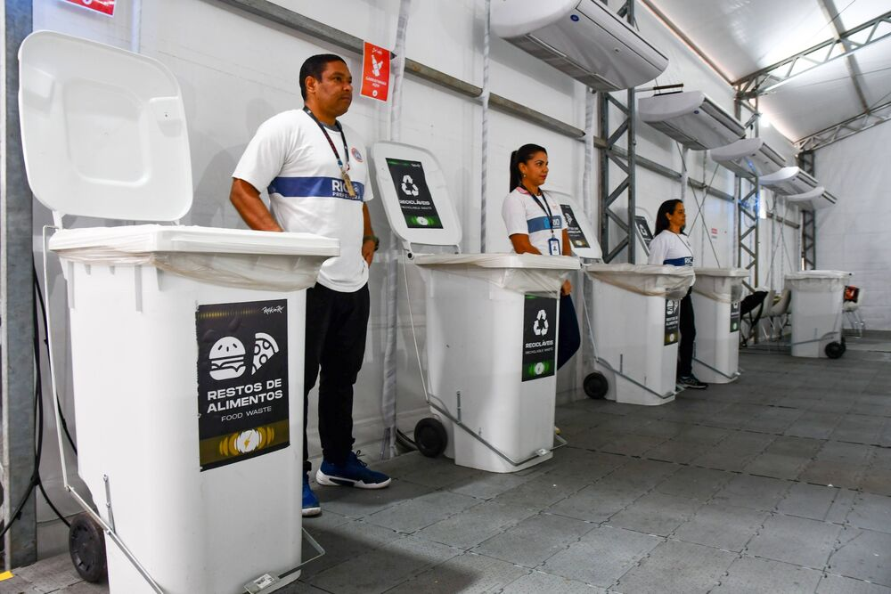

Logística | A coleta de orgânicos começou antes do festival
Quinze dias antes do início dos shows, a COMLURB iniciou a coleta de resíduos orgânicos na Cidade do Rock. A implantação começou com treinamentos em pequenos grupos, visitas técnicas e reuniões com fornecedores. Nessas atividades, as equipes puderam conhecer a rotina dos restaurantes, alinhar os procedimentos de coleta e orientar a separação dos resíduos no local onde eram gerados.
O Food Point 1, primeiro restaurante dos funcionários a abrir na Cidade do Rock, funcionou como um laboratório vivo. Com o restaurante em funcionamento, os APAs ficaram ao lado das lixeiras, orientando os funcionários na hora do descarte. Era ali que o procedimento era posto em prática: identificar o recipiente correto e separar os restos de alimentos das embalagens e dos rejeitos para que os orgânicos pudessem ser recolhidos em uma coleta própria.
Começar com antecedência deu à equipe a oportunidade de observar o que funcionava na rotina do restaurante e identificar onde a orientação precisava ser reforçada antes dos dias de maior movimento.
Registros da operação



Da Cidade do Rock ao Caju
Todas as manhãs, o caminhão W102 da COMLURB recolhia os resíduos orgânicos separados no dia anterior na Cidade do Rock. A coleta em um veículo dedicado mantinha os restos de alimentos separados das embalagens e dos rejeitos também durante o transporte. O trabalho começava nas lixeiras dos restaurantes, com a orientação dos APAs, e seguia até o Ecoparque do Caju, onde as cargas eram pesadas e encaminhadas para tratamento por compostagem ou biometanização.
A compostagem decompõe a matéria orgânica com a presença de oxigênio e produz composto. A biometanização ocorre sem oxigênio e gera biogás. A separação na origem reduz a presença de embalagens e outros materiais que dificultam esses processos. Já a pesagem no Caju permite registrar quanto material chegou para tratamento e acompanhar a destinação das cargas recolhidas no festival.
A ampliação da coleta no Baixo P3
À medida que a separação dos orgânicos foi funcionando no Food Point 1, a COMLURB ampliou a coleta para outros pontos da Cidade do Rock. Um deles foi o Baixo P3, onde ficavam os food trucks, perto da saída do Portão 3. Como a maioria das pessoas que entrava por ali fazia parte de equipes que variavam de um dia para o outro, era preciso repetir diariamente a orientação sobre como separar e descartar os resíduos.
Nos food trucks, boa parte dos alimentos já chegava pré-preparada, por isso havia pouco resíduo orgânico gerado na cozinha. Mesmo em pequena quantidade, os restos de alimentos apareciam misturados a pratos com potencial de reciclagem. A mistura dificultava o aproveitamento dos dois materiais: os restos de comida precisavam ser separados para a coleta de orgânicos, e os pratos, sujos de comida, ficavam com a reciclagem comprometida. No Baixo P3, a ampliação da coleta exigiu, portanto, orientação diária no ponto de descarte.


A coleta de orgânicos chega a mais restaurantes
À medida que a separação e a coleta de orgânicos se tornaram parte da rotina, a COMLURB ampliou a operação para outros pontos da Cidade do Rock. Vinte dias após o início da coleta, abriu o segundo restaurante dos funcionários. Alguns restaurantes do parque procuraram a equipe da COMLURB para receber apoio na separação dos resíduos. Os restaurantes dos palcos também passaram a disponibilizar seus orgânicos para coleta, com exceção do restaurante do Palco Mundo, que não entregou material a esse fluxo.
Nos restaurantes participantes, a equipe organizou a separação no próprio local de descarte, com um contêiner para restos de alimentos e outro para garrafas PET. Os alimentos seguiam pela coleta de orgânicos, e as garrafas eram recolhidas pela coleta seletiva. Essa divisão ajudava a manter os dois materiais separados desde o descarte até o transporte.
42,29 t de orgânicos desviadas do aterro
Rock in Rio 2026 · 18 de agosto a 15 de setembro
Gráfico 1 · Peso acumulado. A linha soma as pesagens desde o início da coleta até atingir 42,29 t em 15/09.
Gráfico 2 · Peso diário. Cada barra representa o peso coletado naquele dia. A barra mais escura marca o maior volume, 5,01 t em 12/09.
Fonte dos dados · Pesagens da coleta de orgânicos da COMLURB